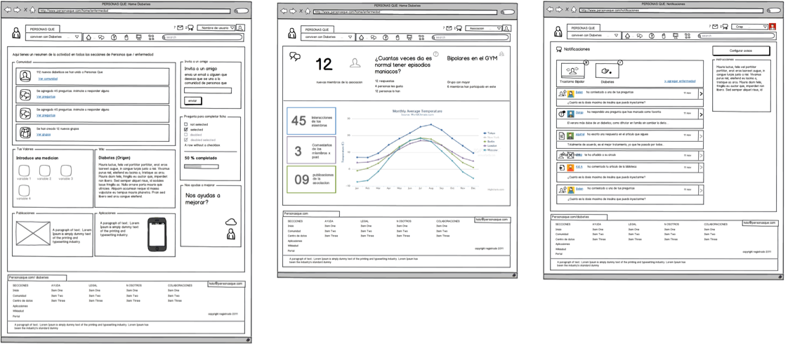
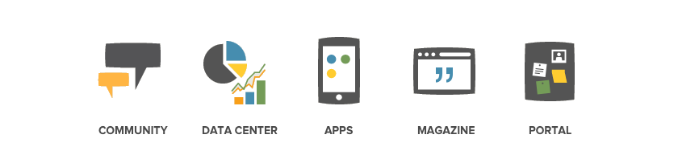
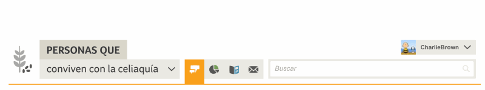
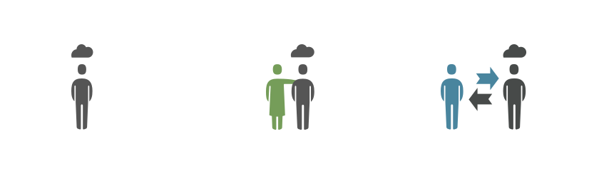
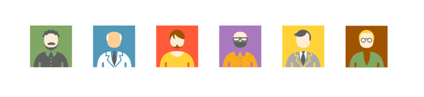

In 2011, people with an illness basically didn’t have a secure place where to communicate with others, and people around them had a hard time finding reliable information regarding the illness.
I was part of the the small team of four that started this amazing journey to create a new kind of digital platform for patients.

People Who initial wireframes using BalsamiqThe project
While working at Saatchi & Saatchi Health, I was asked to participate in a new kind of web platform, a platform for patients with a chronic illness. At first it sounded dull and full of constraints, and full of constraints it was, but not dull.
The project was born inside the agency and the Product Manager had a clear vision of what it needed to convey, who was it for, what tools they needed and what type of content should have based on the experience of working with the major pharmaceutical brands in Spain.
The Challenge
To create a digital platform for patients with a chronic illness, their care takers, friends and family, that could be a place to share with others, provide tools to help control the illness, and find update, reliable information.
My Role
I was hired to translate a product vision into a tangible product that could meet those expectations for the Spanish market while complying with a restrictive regulated market and still be a viable product. I led the user experience for the initial MVP for Spain, and the expansion to 4 other countries, adding new illnesses, additional functionalities and development of mobile apps.
I worked alongside the product manager, visual designers, content and development teams defining the product and creating user flows, wireframes and writing documentation for development.
The platform was launched in October 2012 in Spain. And I left on 2015 when the platform had over 10 illnesses available, and was available in 4 countries in Europe.
Our users, who are we designing for and their needs
People who live with an illness don’t go through it alone, so the platform needed to be a place for patients but also for caretakers, family and friends.
What are their needs
The needs were common to most illnesses:
- Connect: to connect and feel understood by others living in a similar situation.
- Control: manage their treatment, medication, food, and other habits that may affect their health.
- Express: tell their stories, as a way to unload and share experiences that may help others.
- Know: current and reliable information about treatment, experiences, professional opinions that could make their lives better.
The market
There were several platforms available, but most did not attend the Spanish market and didn’t have an all-in-one solution for their needs. Patients associations didn’t have the resources to provide the digital tools that patients needed and Pharma companies didn’t see the investment viable since they don’t offer solutions for a wide range of illnesses, and those illnesses required specific tools to be of value to patients.
Competitors and alternatives
The closest to our vision was “Patients like me”, which was focused on the United States and made no distinction between illnesses. Carenity (France) and other specific apps for wearables, or communities created for just one illness.
Constraints
As you can imagine, the health industry is heavily regulated, so all patient information is critical, any advice on treatment must be given by a licensed doctor, and other considerations are important like reporting suicidal behaviour, offering help lines, avoiding spam for drugs and the difference between the drugs offered in each market.
Designing the experience
Created with six sections: Home, Community, Data centre, Apps, Experiences, Magazine. With the focus on social interaction, providing tools that could help keep control of the illness and provide up-to-date information.

People Who website sectionsIllnesses
The tricky part is not every illness available on the platform has all five sections, and the name of the illness was part of the header, so we created a modular structure that allows to have the number of sections necessary and still work, changing its width depending on the illness selected and the sections available. Making it flexible and still familiar to users.

Roles: Patient for one illness /caretaker for another
We found that some of the users were patients for an illness, but also had a family member with another illness, and the way the wanted to interact with the platform was different depending on the the role they were playing.
That was a big insight, so we designed it to be vertical, everything was tied to an illness, that meant you could only interact with people that suffered or cared for that same illness. That, for us, was a huge benefit, reducing noise, and improving the quality of relationships.

User rolesPrivacy
This was a big factor to take into account, since some illnesses are more delicate than others, people may choose to share with others that they have the illness. So we designed for privacy:
- We asked for a username, instead of real names.
- We offered avatars that users could choose, instead of uploading their personal photo.
- You shared gender and city of residence, for statistical purposes, but you could choose to share it publicly or not.

User avatarsAnonymous Relationships
This presented a new challenge, to create friendships with people you didn’t know, and coming to a place where everyone maintains their privacy. So the challenge was to create a social network focused on discovery, where you didn’t have any friends when you first go in and start building you own “circles” of friends from interacting with others on the platform.
Safety
This was a major constraint, but we managed to put in place all the resources needed with a mix of technology and great people.
Avoiding spam and Medical databases
We wanted to avoid companies going into the platform to promote their medications so we developed and integration with medical databases that detected the drug name and replaced it with its active component.
Suicide prevention
We started the platform with bipolar disorder as the first illness, that meant a specific set of control tools, but also meant a special attention to our users. We were required by law to report if any user had expressed they wanted to end their life. So we developed a supervision tool that analysed the comments and watched for specific words that could mean they could be in danger. When this happened, the platform informed the user to call the emergency services, and reported to the authorities all comments with those criteria in less than 12 hours.
Community management
We also had a team o community managers that could help with the supervision of the platform, detecting spam, unauthorised users (people pretending to be doctors, recommending treatments, etc) or helping users with doubts that they could have while using the platform.
Licensed doctor
We also had a licensed doctor for each illness, one that could actively participate in the conversation, answer questions and make sure that people were not following treatments that could put them in danger, always referring them to their doctor if they wanted to make changes in their treatment or were thinking of stoping it.
The doctors we had were vital for the development of tools that could help patients control their illnesses. We interview them to have a better picture of what was important, how was the best way to capture that information and what kind of information we could provide users to stick to their treatment.
Visual design
The big major difference was in the design and its look and feel (I had nothing t do with that, it was all the Product Manager and Visual Designer there). What we found was that every platform looked liked going to a hospital with sad colours, bad (stock) images or pictures that made you feel sorry for the people that had the illness.
Our approach was different, the fact that you suffer an illness doesn’t mean that you are unhappy, or need to be reminded how bad it is living with it by all aspects of the design. So we designed it with a focus on light colours, a heavy presence of illustration, and overall care for aesthetics. Making it a place where you were comfortable and were pleased to be a part of.
Going global
Due to each country’s regulations, we need a global platform with local websites, adjusting language, medical databases, community supervision and the specific cultural needs.
The first to arrive was Germany, France and Italy, each with its own set of challenges but proving the concept worked with some adjustments.
Learning from our mistakes:
There are some things that we could have done better:
Agile mindset:
We followed a waterfall process and didn’t launch until all sections of the platform were developed.
Data informed decisions
We didn’t have a specialised data team to really understand user behaviour, we were a small startup, but we definitely could have gained a lot by better insights from analytics or user testing.
Focus on acquisition
We put a lot of effort on adding new functionalities for existing users, looking back seems that the real challenge was gaining traction and adding more users consistently.
Awards
On 2013, The platform won a Gold Laus Award in the category of best web application, for its overall user experience, navigation structure, visual simplicity, iconography and easy access to content.
Like the project?
- Appreciate on behance